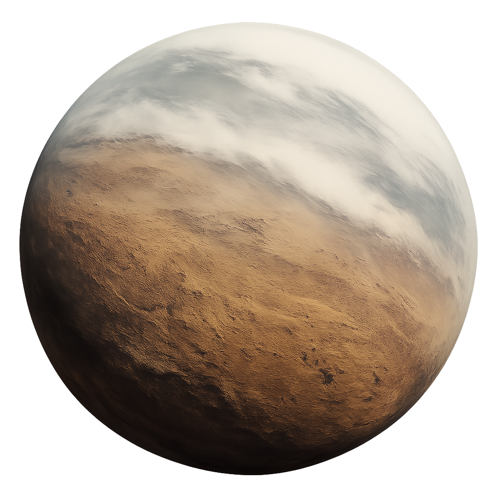

El Mundo de Edmunds
Un desierto de esperanza y el futuro de la humanidad.
Un Nuevo Amanecer
Atmósfera Respirable
A diferencia de los otros mundos, el planeta de Edmunds posee una atmósfera rica en nitrógeno y oxígeno, perfectamente respirable para los humanos sin necesidad de casco, abriendo la puerta a una colonización real.
Superficie Rocosa
Su superficie es un vasto desierto rocoso, con cañones y mesetas esculpidas por el viento. Aunque árido, el terreno es estable y apto para la construcción de asentamientos permanentes bajo un sol similar al de la Tierra.
Condiciones para la Vida
Con una gravedad del 90% de la terrestre y sin la peligrosa dilatación temporal de Miller, este planeta es un verdadero oasis. La presencia de química orgánica compleja confirma que es un mundo donde la vida puede prosperar.
El Legado de Edmunds
El astronauta Wolf Edmunds fue el primero en confirmar que su planeta era la joya de la misión Lázaro. Su baliza transmitió datos positivos durante años, una señal de esperanza constante.
Lamentablemente, Edmunds falleció en un corrimiento de tierras mucho antes de la llegada del Endurance. Su sacrificio no fue en vano; su descubrimiento solitario le dio a la humanidad un destino, un lugar al que finalmente llamar hogar. Su campamento se convirtió en la base del futuro.
El Futuro de la Humanidad
Al final de su viaje, Amelia Brand llega al planeta de Edmunds y establece el primer campamento, el "Plan B" en acción. Sin su casco, respira el aire de un nuevo mundo mientras se prepara para criar a la próxima generación de la humanidad. A lo lejos, Cooper, tras su odisea a través del teseracto, viaja en una nave para reunirse con ella, marcando el comienzo de un nuevo capítulo para nuestra especie.